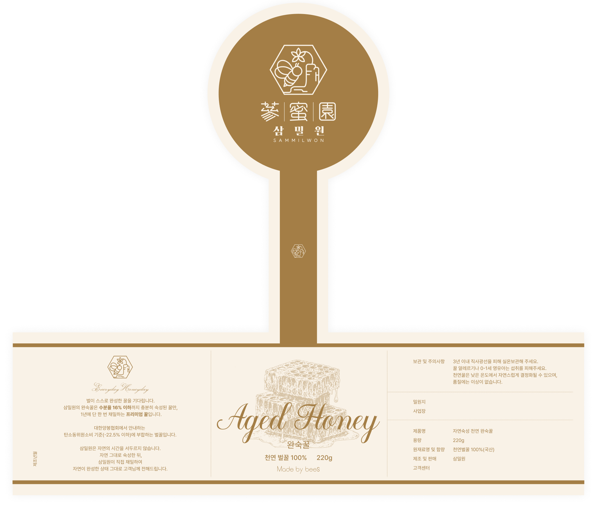
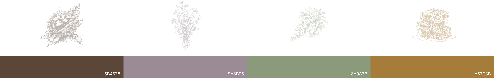
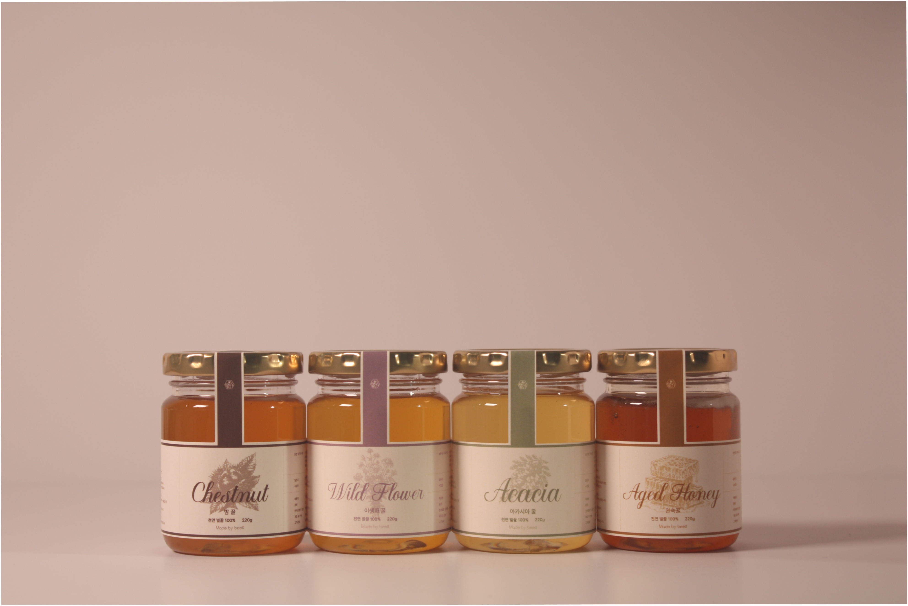
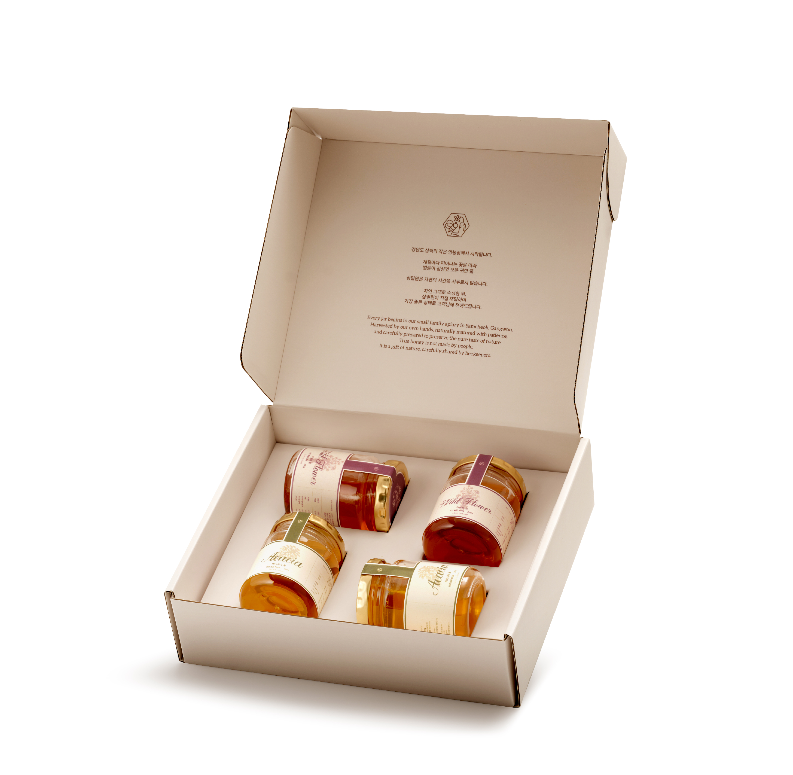
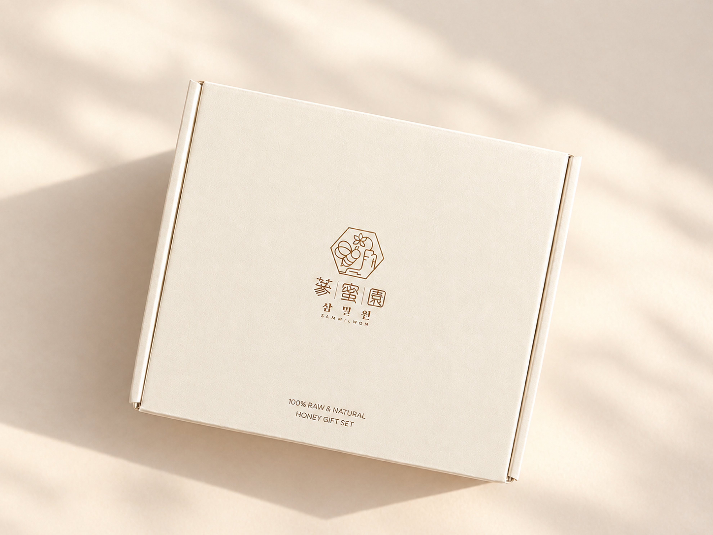
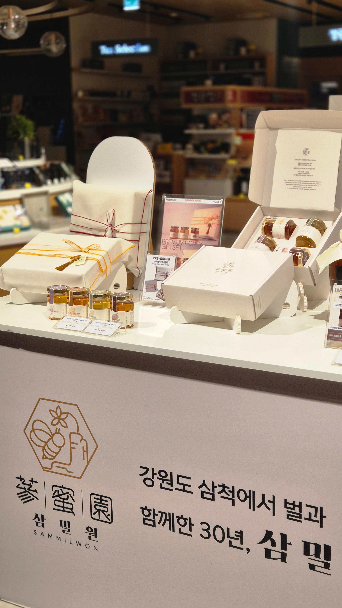

BRAND DESIGN
삼밀원 추석 기획 상품 디자인
2026년 추석 선물 기획 상품의 디자인을 담당했습니다.
2026.07 - 08
디자인 100%(일러스트레이터)

Background
추석기획상품의 병 라벨, 박스 패키지, 리플렛 디자인에 참여했습니다.
삼밀원은 기계공정을 거치지 않은 자연숙성으로만 채밀한 건강한 꿀을 소비자에게 전달하는 브랜드입니다.
삼밀원이라는 브랜드의 제품을 자연의 건강함과 더불어 트렌디하고 고급스럽게 제공해 소비자의 브랜드 경험 가치를 높이고자 했습니다.
Detail
네 종류의 제품에 맞는 일러스트를 AI로 제작했습니다.
‘옛날 금속판화 스타일’의 일러스트를 배치하였으며 컬러 선택에서도 차분하면서도 고급스러운 분위기를 주고자 했습니다.



Detail
F형 박스를 사용해 열고 닫기 편리함과 더불어 내용물을 안전하게 보관할 수 있어 추석 선물용 제품으로써의 사용성을 강화했습니다.
따뜻하면서도 고급스러운 색상에 더해 박스 안팎으로 삼밀원 브랜드에 대한 설명과 정체성을 담았습니다.


Selling
죽전 신세계 백화점 판매 현장 이미지입니다.
